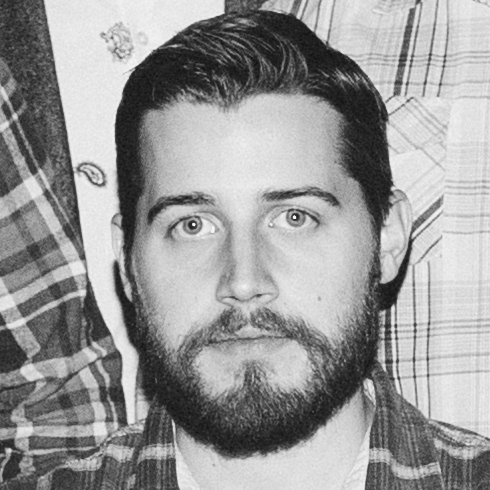

Dreamer, Artist, Maker
An Introduction
With experience in a vast array of skills and technologies, my goal in any work I help craft is to make people happier, whether that comes from a life-changing experience, or one less tap. My passions lie in software design and development, where I’ve specialized in both mobile and web platforms, occasionally delving into 3D and VR technologies. At home, you’ll find I’m a huge pop culture nerd, growing up with a life-long love for all things cinema, music, and games. Combine all of these things in one harmonious package, and you get one finely bearded human being.
Proficiencies
- Photoshop, Illustrator, After Effects
- Xcode, Android Studio
- HTML5/Jade, CSS/LESS, Javascript
- Blender, Unity3D
- Pencil, Pen, Paper
- Earth, Fire, Wind, Water, Heart